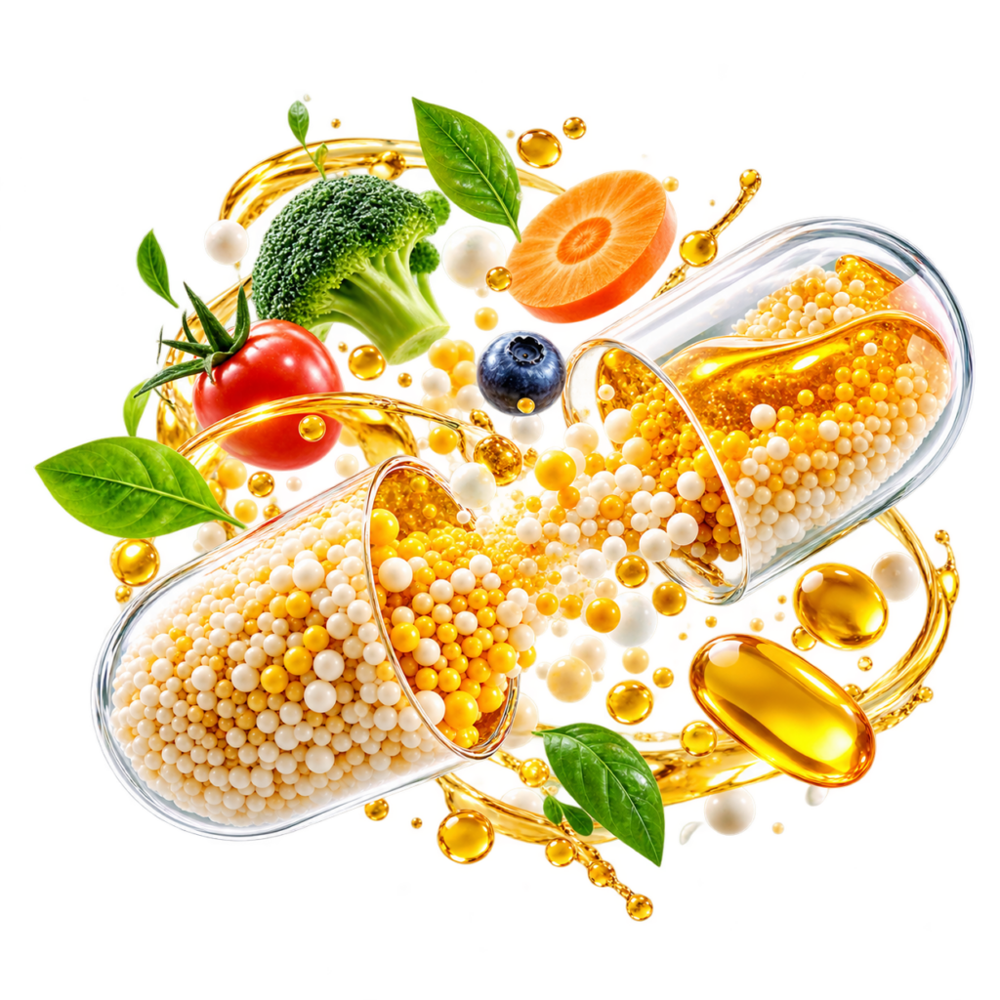

Технология микроинкапсуляции для стабилизации жирорастворимых витаминов и нутрицевтически активных веществ — защита от тепла, света и окисления, улучшенная водорастворимость и стабильность в готовом продукте.

Vita-Q® — технологическая платформа PHS Life Sciences, созданная для повышения стабильности и водорастворимости жирорастворимых витаминов и активных веществ. Микроинкапсуляция в форме микрогранул защищает чувствительные ингредиенты от тепла, света, окисления и взаимодействия с другими компонентами рецептуры.
Технология рассчитана на задачи БАД, функциональных продуктов и напитков. Формат продукта подбирается под конкретное применение — от порошковых смесей и капсул до жевательных мармеладок и обогащённых напитков.
Шесть практических эффектов, которые важны при разработке рецептуры и выводе продукта на рынок.
Помогает защищать чувствительные ингредиенты от тепла, света и окисления.
Поддерживает эффективную доставку и усвоение нутриентов.
Помогает сохранять стабильность ингредиентов при хранении.
Инкапсуляция снижает нежелательные реакции с другими компонентами рецептуры.
Поддерживает заданный профиль высвобождения нутриентов.
Подходит для разных форматов продуктов и задач применения.
Четыре свойства, которые Vita-Q® придаёт готовому продукту.
Защищает нутриенты от тепла, света и окисления.
Улучшает усвоение жирорастворимых витаминов и поддерживает решения для кормов.
Обеспечивает постепенное и стабильное поступление актива.
Работает в разных категориях продуктов.
Основные группы инкапсулированных активов. Актуальные концентрации и наличие подтверждаются у PHS.
Витамины D2, D3 и K2, фолиевая кислота 10%, биотин 10%.
Астаксантин, витамин E ацетат 50%, бета-каротин 1 / 10 / 20%, CoQ10 20% и 40%, лютеин 10% и 20%, ликопен 5% и 10%, ресвератрол 20% и 40%.
Микроинкапсулированная DHA для обогащения продуктов и напитков.
Ассортимент и концентрации приведены по материалам PHS Life Sciences 2026 г. Перед публикацией и заказом подтвердите актуальную спецификацию.
Форматы, в которых защита жирорастворимых витаминов особенно важна.
Vita-Q® — технологическая платформа PHS Life Sciences для стабилизации и повышения водорастворимости жирорастворимых витаминов и нутрицевтически активных веществ.
Микроинкапсуляция помогает защищать чувствительные ингредиенты, снижать нежелательные взаимодействия с другими компонентами рецептуры и поддерживать стабильность и срок годности продукта.
В портфель входят витамины D2, D3 и K2, отдельные витаминные микрогранулы, каротиноиды, CoQ10, лютеин, ликопен, ресвератрол и микроинкапсулированная DHA. Наличие и концентрации подтверждаются у PHS.
В брошюре 2026 года указаны натуральные и синтетические микрогранулы MK-7 0,1% и 0,2%, а также натуральное и синтетическое масло витамина K2 с настраиваемой концентрацией. Актуальное наличие необходимо подтвердить.
Да, в брошюре 2026 года представлена микрогранула с витамином D3 (600 МЕ) и витамином K2 (55 мкг) в форматах 10 мг и 20 мг. Информацию о наличии и спецификации необходимо подтвердить у PHS перед публикацией.
Пришлите состав продукта и требования к рецептуре — подберём технологию, пришлём образцы, спецификации и данные по применению.